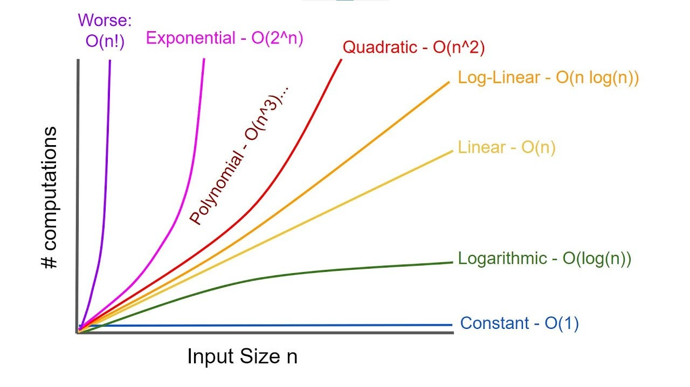

What is computer science, anyway?
First off, welcome to "The CompPendium!" This is the very first article of this blog, as well as your journey learning computer science with us! As you probably read from the title and description of this article, what even is computer science?
Of course, we could start with an obvious definition: computer science is "the science of computers." Okay, that might be a little TOO obvious.
The given definition on Google gets a little more specific:

Let's break this definition down some more.
The first part mentioned is "the study of the principles."
Computer science is a science, so there are several underlying ideas regarding the inner workings of these technologies. This website has a wonderful article about this subject, but this post will be breaking some examples down in an understandable way).
Computation:
Similar to how you might use a calculator to solve a math problem, computers are also incredibly powerful tools that can be used to solve many things. Like any problem, however, the input the computer receives must go through a series of steps/processes in order to receive the desired output.
When discussing how long it takes to get an output based on an input of a certain size, we use a term called time complexity. Time complexity is very important in computer science as we always want things to run as efficiently as possible. The graph below shows O-notation, or the upper bound of an algorithm’s input size-time relationship for all input sizes n.
Communication:
You probably weren’t alive during the days of handwritten snail mail, when we had to wait days, weeks, or even months for a response. Come the 21st century, however, and we can now send emails, text messages, and even birthday cards in seconds!
But, as Spider-Man would say, “with great power comes great responsibility.”
For example, how do we make sure that what we are sending gets to the other end without any trouble? What if someone decides to swoop in and gain access to information they shouldn’t be allowed to see? Well, we have protections for situations like this, one of them being cryptography.
Have you ever seen one of those movies where the detective has to crack a secret code in order to figure out a clue and solve the mystery? It can take a pretty long time, but technology allows this process to be done much faster!
When using cryptography, the sending device encrypts the information you are sending into something like a secret code. If someone gets their hands on it and doesn’t know the code, they’re not going to be able to figure out the information—this is good news for us! When the message gets to the receiving end, they will have a way to decrypt the message, turning it back into information that humans can understand.
Coordination:
Staying on the topic of comparing Marvel superheroes to computer science concepts, there arguably isn’t a more coordinated group in the Marvel Universe than the Avengers! They’ve rarely lost a fight in the movies (unless Hawkeye isn’t there), so how are they able to fight these battles and achieve the same result?
Well, as you probably read from this section title, it comes down to coordination. From the very start of a battle, we always have Captain America taking the lead—this is comparable to computers setting protocols that tell different processes how to interact with each other safely. Each Avenger knows their role: Iron Man provides aerial support, Thor brings heavy firepower, Black Widow and Hawkeye handle precision strikes, and Hulk focuses on chaos management (or maybe he causes the chaos—that's up to you to decide). If they ignored this structure and all attacked randomly, their powers could collide, causing more harm than good.
In computer science, the same principle applies. If two processes try to access or update the same resource at the same time without proper coordination, the result is indeterminate—like a corrupted file or an unpredictable program state (which is NOT good!). Coordination protocols, like locks, semaphores, or message passing, act like Cap’s battle plan: they organize the “team” of processes, prevent conflicts, and ensure that the system behaves predictably.
Recollection:
In computer science, recollection is about how computers remember and retrieve data efficiently. All storage systems are organized in a hierarchy—some data can be accessed very quickly, while other data takes longer to reach. Computers tend to favor certain pieces of data at any given time, accessing them more often than others. Recollection is the idea that a system keeps track of these “important” or frequently used pieces of data so it can get to them faster, just like keeping your most-used tools within easy reach on your desk.
You can think of it like a library. The books you read most often are kept on a shelf right by your chair, so you don’t have to run across the room every time you need one. The less-used books stay in the back stacks. Computers do the same thing with data: they “recollect” the pieces they need most often and keep them close for quick access, making programs run more efficiently.
Automation:
Automation is all about letting computers handle repetitive or tedious tasks so humans don’t have to (think of it like JARVIS if you’ve been enjoying the Marvel metaphors!). Just like using a dishwasher or a washing machine speeds up chores at home, automation speeds up processes in computing and business. Instead of manually performing the same steps over and over, computers can follow a set of rules or instructions to complete the task quickly and consistently.
AI, for example, has taken automation to the next level. With artificial intelligence, computers can follow instructions, make decisions, and adapt based on the data they see. Think of how AI could sort through thousands of emails to flag important ones, predict what products a customer might want to buy, or even generate content—all tasks that would take humans much longer to do manually. By combining automation with AI, we can focus our energy on creative and strategic work while letting computers handle the repetitive heavy lifting.
Evaluation:
Evaluation is about predicting how well a computer system or program will perform before or while it’s running. Just like a coach might study an opposing team’s past games to figure out the best strategy, computer scientists use evaluation to understand how a system will behave under different conditions. This helps identify potential problems, improve performance, and make smarter decisions about how to design or optimize a program.
For example, before releasing a new app, developers might test it with different amounts of data to see how fast it responds, or how much memory it uses. Evaluation can also involve using metrics, simulations, or models to estimate performance without running the system at full scale. In short, evaluation helps computers—and the people who use them—predict outcomes and avoid surprises, making complex systems more reliable and efficient.
Design:
Last but certainly not least, we have design. Design in computer science is about planning and organizing how a system or program will work before building it. Just like an architect draws blueprints before constructing a building, software engineers and solution architects create designs to map out the parts of a system, how they interact, and how data flows between them. A good design makes a program easier to build, maintain, and scale, while a poor design can lead to confusion, bugs, or inefficiency.
For example, when designing a website, engineers decide how users will navigate pages, how data will be stored, and how different features will communicate with each other. Design often involves thinking ahead, making trade-offs, and considering future growth so the system can handle more users, more data, or more features without breaking down. In short, design is the blueprint that guides the creation of complex computer systems, helping them work smoothly and reliably from day one.
Wow, that was a lot of principles! Thanks for sticking around for so long! I promise we’re almost done talking about the definition, and you can then go and tell your friends what a strong foundation of computer science you have!
The second part of the definition is “use of computers.”
This part is less complicated–just think of everything you have the ability to do with computers! Some obvious ones include building websites or AI chatbots, but there are so many other incredible things that can be built! For example, people use computers to create the visual effects for movies! It looks really cool to us, but people had to learn to design and use the software that allows these effects to come to life! Another one that is always interesting is game development. These can combine logic, animation and overall design to create a product that we as consumers are able to use!
That’s what’s so incredible about technology: it allows us to be able to build things that we may never have thought to be possible prior to today! That’s why I hope learning about computers and everything it has the potential to do will inspire you to continue building and creating things that leave the world better than you found it!
Technology truly is powerful, and, with the right knowledge, we can transform the world!